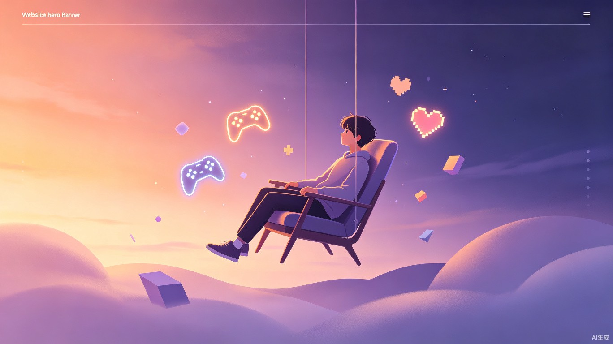

当代人高强度工作后精神耗竭严重，但受限于时间、精力和预算，很难通过旅行、阅读等传统方式真正放松。市面上游戏推荐要么只看热度排行榜，要么让用户自己在海量内容中翻找，忽略了「我当下是什么状态」这个关键变量。
「精神脱离」是一款微信小程序，用户授权连接手机/手表的健康与运动数据后，产品综合天气气温、工作时长、睡眠质量、运动时长、社交频率等多维度信息，每日智能生成专属游戏清单。疲惫时推送即开即玩的轻量小游戏，状态在线时推荐值得沉浸的 PC/主机剧情作品，让精神放松零门槛、零决策成本。
微信小程序，核心功能为「每日游戏推荐 + 状态匹配 + 轻社交」。
25-35 岁上班族——工作节奏快、精神内耗重，下班后想放松却不知道怎么选。
旅行、读书、线下休闲都需要时间、金钱和精力，普通人难以持续投入
游戏市场内容海量但推荐千篇一律，热门不等于适合自己当下的状态
打开游戏平台翻半天，最后什么都没玩，时间白白流逝
明明很累了却被推荐高难度竞技游戏，或状态很好却被推简单小游戏
接入手机/手表健康数据，综合天气、工作时长、睡眠、运动、社交频率等维度，让推荐有据可依
覆盖「轻量小游戏 / 存档续玩 / 多人联机 / 新游发现」，满足不同场景与状态需求
支持设置常玩游戏并加大推送权重，同时可订阅每日推荐摘要，减少主动打开成本
小程序定位为「游戏发现助手」，最终选择权始终交给用户，不替用户做决定
每天基于真实状态获得专属游戏推荐。无需动脑、无需筛选——疲惫时三局休闲小游戏就能回血，状态好时可以沉浸 3 小时剧情大作。将「想放松却不知道玩什么」变成「今天最适合我的游戏已经准备好了」。
打破传统推荐只看热度、品类的逻辑，首次将用户当日身心状态纳入推荐体系。让游戏推荐从「别人都在玩」进化为「这个最适合现在的我」，为个性化娱乐服务提供全新思路。
替代无意义的刷屏和无效熬夜，用轻度、适配的游戏娱乐帮助用户科学释放压力。在高压生活中提供一种低成本、可持续的情绪调节方式，让放松真正有效。